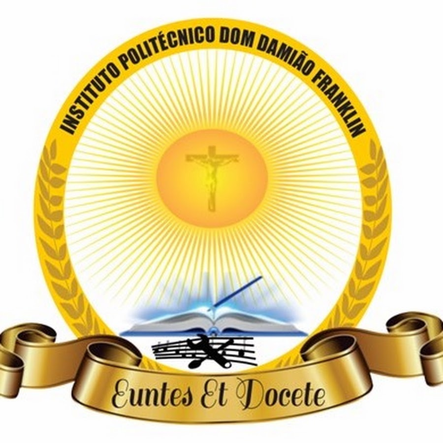
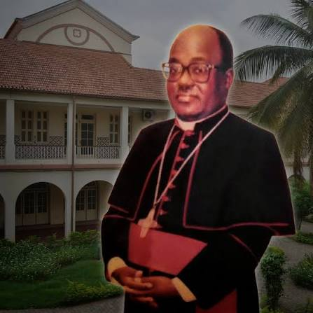

About us

Sobre o IPDDF
O Instituto Politécnico Dom Damião Franklin (IPDDF) forma alunos há 10 anos. O lema da escola é "Euntes Et Docete". Este portal junta num só sítio as novidades, a biblioteca digital e o pagamento de propinas.
A missão do Instituto Politécnico Católico Dom Damião Franklin é proporcionar uma educação de qualidade, baseada nos princípios e valores cristãos, formando alunos competentes, responsáveis e preparados para contribuir para o desenvolvimento da sociedade. A instituição oferece formação geral e técnico-profissional, abrangendo o I Ciclo (9.ª classe) e o II Ciclo (10.ª, 11.ª, 12.ª e 13.ª classes). Entre os cursos técnicos destacam-se Informática, Electricidade, Máquinas e Motores e Bioquímica, preparando os estudantes para o mercado de trabalho e para os desafios do futuro.

Dom Damião Franklin
Fundador do Instituto Politécnico Dom Damião Franklin, a escola tem o seu nome em sua homenagem.
Dom Damião António Franklin nasceu em 6 de Agosto de 1950, em Cabinda, Angola. Foi sacerdote, professor, bispo e arcebispo de Luanda. Durante a sua vida, destacou-se pelo seu contributo à Igreja Católica e à educação, tendo sido reitor da Universidade Católica de Angola. Faleceu em 28 de Abril de 2014, na África do Sul. O Instituto Politécnico Católico Dom Damião Franklin recebeu esse nome em sua homenagem, reconhecendo o seu contributo para a educação e a sociedade angolana. A instituição procura transmitir valores como a disciplina, o respeito, a solidariedade e o conhecimento.